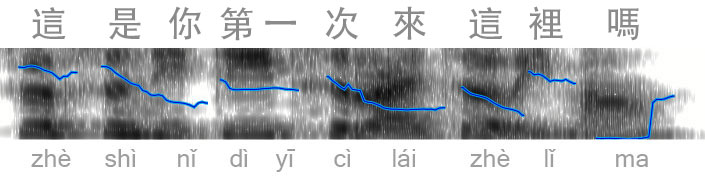

發音¶
Jesuit missionaries introduced the Rosary prayers to China in the late sixteenth century. Michele Ruggieri arrived in 1579 and Matteo Ricci in 1582. Chinese Catholics soon recited them in characters according to local dialects -- Cantonese (廣東話) in Guangdong and Hong Kong, Hokkien (閩南語) in Fujian and Taiwan, and northern Mandarin dialects in Beijing.
Chinese has traditionally been written with logographic characters, and pronunciation has always varied by dialect. Comprehensive dictionaries list more than 50,000 characters. The 1716 Kangxi Dictionary cataloged 47,035 entries. Functional literacy in classical texts requires several thousand characters. The civil service examinations, instituted in 605 and abolished in 1905, required candidates to memorize the Four Books and Five Classics (roughly 400,000 characters total) and to compose original eight-legged essays, with provincial pass rates often below 5 percent.
After the Republic of China was founded in 1912, the Commission on the Unification of Pronunciation established a national standard based on the Beijing dialect. It was formalized by 1932 and is known as 國語 in Taiwan and 普通話 on the mainland, or Mandarin Chinese more colloquially.
This page presents the standard Mandarin pronunciation for the Rosary.
Phonemes (音位)¶
Mandarin syllables are formed from 21 initials, 3 medials, and 13 base finals -- 37 phonetic components -- plus a tone.
Initials (聲母)
Labials -- lips or lower lip against upper teeth
ㄅ (b), ㄆ (p), ㄇ (m), ㄈ (f) =>
ㄅㄆㄇㄈ
Alveolars -- tongue tip against the ridge behind the upper teeth
ㄉ (d), ㄊ (t), ㄋ (n), ㄌ (l)
Velars -- back of the tongue against the soft palate
ㄍ (g), ㄎ (k), ㄏ (h)
Palatals -- tongue blade against the hard palate (unique to Mandarin)
ㄐ (j), ㄑ (q), ㄒ (x)
Retroflex -- tongue tip curled back
ㄓ (zh), ㄔ (ch), ㄕ (sh), ㄖ (r)
Dental sibilants -- tongue tip near the upper teeth, with a hissing quality
ㄗ (z), ㄘ (c), ㄙ (s)
Aspirated consonants ㄆ (p), ㄊ (t), ㄎ (k), ㄑ (q), ㄔ (ch), ㄘ (c) are pronounced with a distinct puff of air.
Medials (介音) and Base Finals (韻基)
Medials -- 3 symbols
ㄧ (i), ㄨ (u), ㄩ (ü)
The medial ㄩ (ü) is the rounded front vowel (English "E" sound but form your mouth as you would when saying "oo"). In pinyin the “u” sometimes sounds like “oo” in cartoon, but other times like a German ü (written as yu or ü). In zhuyin there are no such ambiguities -- the German-sounding ü is always ㄩ.
Base Finals -- 13 symbols
ㄚ (a), ㄛ (o), ㄜ (e), ㄝ (ê), ㄞ (ai), ㄟ (ei), ㄠ (ao), ㄡ (ou)
ㄢ (an), ㄣ (en), ㄤ (ang), ㄥ (eng), ㄦ (er)
These combine with the 21 initials (and tone) to form every Mandarin syllable. The zhuyin symbols cover all of pinyin and reflect the actual spoken phonemes.
注音 或 拼音?
Pinyin serves as the primary learning tool for these sounds in the prayers, but it is a romanization that maps Mandarin Chinese phonemes onto Latin letters. This differs from most other latinizations, as there is very little overlap with Latin or Romance language phonemes. Non-Chinese speakers commonly misread pinyin by applying familiar Latin-based phonetics.
Zhuyin, also known as "bopomofo" after its initial symbols ㄅㄆㄇㄈ, is a phonetic system that perfectly captures the phonemes of spoken Mandarin. Its symbols are derived from traditional Chinese characters, forming a dedicated set with no pre-existing sound associations from other languages. This provides a clear mapping without the ambiguities of Latin scripts -- for example, ㄅ (b) is always the unaspirated bilabial stop and ㄩ (ü) is always the distinct rounded front vowel.
Learning zhuyin first helps internalize the precise Mandarin phonemes before mapping them to pinyin, avoiding the substitution of English or Latin sounds.
Both systems represent the identical set of sounds, but zhuyin clarifies the distinctions for non-native speakers.
Tones (聲調)¶
It is commonly taught that there are four tones plus a neutral tone. These are usually demonstrated with the syllable "ma": 媽, 麻, 馬, 罵, 嗎 -- see if you can hear the difference (play all). Standard teaching often stops at these five tones and presents them as complete. To better understand these five tones, the traditional isolated forms are helpful.
Tones in isolation (本調)
真 zhēn (1st)
常 cháng (2nd)
好 hǎo (3rd)
大 dà (4th)
聰明 cōngming (neutral)
These are the tones taught in isolation. Now consider actual spoken Mandarin. The Praat diagram below shows contours from a native speaker saying a natural phrase. Click the image to listen, and look carefully at the actual tones.

There is a lot going on here that does not match the five tones. And it’s a native Mandarin speaker. When you ask native speakers what’s going on, they’ll respond as confused as if you asked a native English speaker why they have so many vowel sounds. In reality, there are 5 tones in Mandarin just like there are 5 vowels in English. The five-tone model cannot explain it, and real spoken Mandarin is far more complex.
If you only learn 5 tones, you not only won’t understand native speakers, you won’t be understood when you speak.
Language teachers often tell learners they will master tones through exposure and practice -- a natural discovery process. This should cause us to cringe. The point of language teaching is the opposite:
Henry Widdowson
The whole point of language pedagogy is that it is a way of short-circuiting the slow process of natural discovery and can make arrangements for learning to happen more easily and more efficiently than it does in natural surroundings.
Typical tone instruction does not short-circuit the slow process of natural discovery. Any educator or resource that promotes natural discovery is fundamentally failing. It is a polite way of admitting, "I do not know how to teach this -- figure it out yourself."
Tones in actual spoken Mandarin are far more complex than standard resources admit. Tone Sandhi and Tone Pairs are far more efficacious towards proper Mandarin pronunciation, directly complimenting the patterns you'll find in the rosary prayers.
Tone Sandhi (聲調變化)¶
Tone change rules, or tone sandhi, govern how tones interact in actual spoken Mandarin. Tone sandhi rules are the first clear indication that tones in context are far more complex than the "five tone" textbook model.
3rd tone sandhi (before another 3rd tone)
A 3rd tone before another 3rd tone becomes 2nd tone.
母 (mǔ), 瑪 (mǎ)
母瑪 (mú mǎ)
天主聖母瑪利亞
3rd tone before non-3rd
A 3rd tone before any other tone is realized as low and flat (the full dip and rise is rare in connected speech).
旨 (zhǐ), 意 (yì)
旨意 (zhǐ yì)
願祢的旨意奉行在人間，如同在天上。
2nd tone simplification
A 2nd tone after a 1st or 2nd tone often levels toward a 1st tone in fluent speech.
國 (guó), 來 (lái)
國來臨 (guó lái lín)
願祢的國來臨；
一 (Yī)
一 is 1st tone in isolation. It becomes 2nd before a 4th tone and 4th before 1st, 2nd, or 3rd.
一 (yī), 樣 (yàng)
一樣 (yí yàng)
如同我們寬恕別人一樣；
不 (Bù)
不 becomes 2nd tone before a 4th tone.
不 (bù), 要 (yào)
不要 (bú yào)
不要讓我們陷於誘惑；
These adjustments appear throughout the Rosary. The rules are not exhaustive and vary somewhat by speaker.
Tone Pairs (聲調組合)¶
Tone pairs refer to the tonal contours produced when two syllables are spoken together in a disyllabic word or compound. Most Mandarin vocabulary consists of two-syllable words, so tones rarely occur in isolation in real speech. Practicing isolated tones (the classic "ma" chart) is a starting point, but it is insufficient for natural pronunciation and listening. Tone pairs train the ear and articulators for relative pitch movement, coarticulation, and the actual flow between syllables.
There are 20 standard tone pairs: the first syllable uses one of the four main tones, and the second uses one of the four main tones or the neutral tone (0). Some counts treat it as 19 audible patterns because the 3+3 sandhi rule produces a 2+3 contour (as shown above). Neutral tone only appears in second position.
1st Tone Pairs
1-1: 今天 (jīn tiān)
1-2: 中國 (zhōng guó)
1-3: 醫生 (yī shēng)
1-4: 天氣 (tiān qì)
1-0: 媽媽 (mā ma)
2nd Tone Pairs
2-1: 人民 (rén mín)
2-2: 學習 (xué xí)
2-3: 沒有 (méi yǒu)
2-4: 學校 (xué xiào)
2-0: 朋友 (péng you)
3rd Tone Pairs
3-1: 體貼 (tǐ tiē)
3-2: 旅行 (lǚ xíng)
3-3: 理想 (lǐ xiǎng)
3-4: 勇氣 (yǒng qì)
3-0: 嫂子 (sǎo zi)
4th Tone Pairs
4-1: 看書 (kàn shū)
4-2: 大學 (dà xué)
4-3: 電影 (diàn yǐng)
4-4: 再見 (zài jiàn)
4-0: 爸爸 (bà ba)
Learning tone pairs is a helpful way to identify new words as they’ll most often fit one of the 20 tone pairs. John Pasden at sinosplice.com (who also wrote about using Praat to visualize tones) put together freely available Tone Pair Drills with audio examples of each of the tone pairs. I loaded John’s tone pair drills into a flashcard app:
Most important, daily rosary will do wonders in training the ear and tongue for recognizing tone pairs. Try to identify the tone pairs in the different passages.
聖母經 ↗
萬福瑪利亞，妳充滿聖寵。主與妳同在。
Wàn fú Mǎ lì yà, nǐ chōng mǎn shèng chǒng. Zhǔ yǔ nǐ tóng zài.
This passage includes 4-2 (萬福), 1-3 (充滿), 4-3 (聖寵), and 2-4 (同在).
聖號經 ↗
因父及子及聖神之名。
Yīn fù jí zǐ jí shèng shén zhī míng.
Listen for 1-4 (因父), 2-3 (及子), 2-4 (及聖), 4-2 (聖神), 2-1 (神之), and 1-2 (之名).
推薦¶
Pleco app and learnchineseez.com; excellent online dictionaries, as well as mdbg.net and zdic.net; excellent for looking up characters with audio, pinyin, and zhuyin.
Sinosplice.com; clear explanations and drills especially helpful for tones.
Happy Chinese (and similar shows); CCTV series with clear pronunciation and subtitles.
Chinese flashcards; hand-made are usually best, but listening to audio associated with each card is extremely helpful.
不推薦¶
While the original Michel Thomas was great for Spanish, the Chinese course was slow pace and painfully inaccurate for tone guidance. Similar experience with Pimsleur, and almost all of the advertised learning apps (ChineseSkill, ChinesePod, etc) were an unfortunately waste of time.